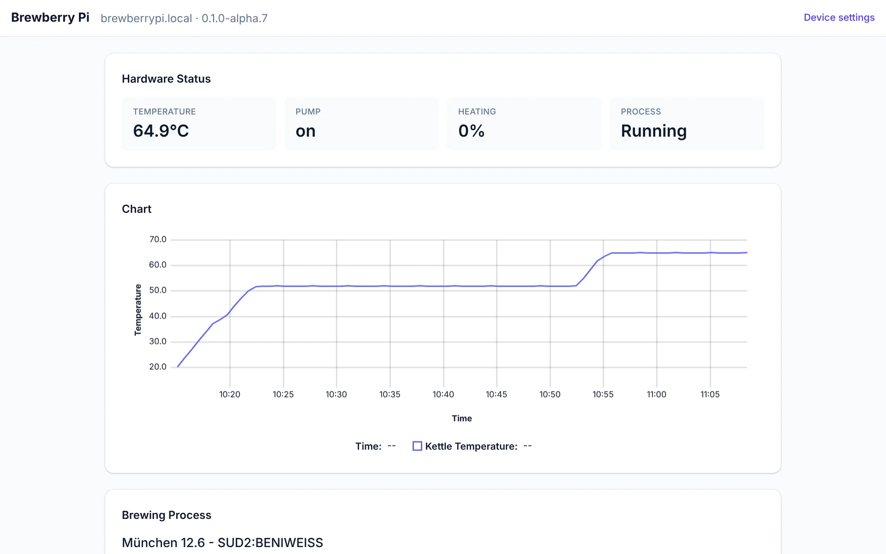
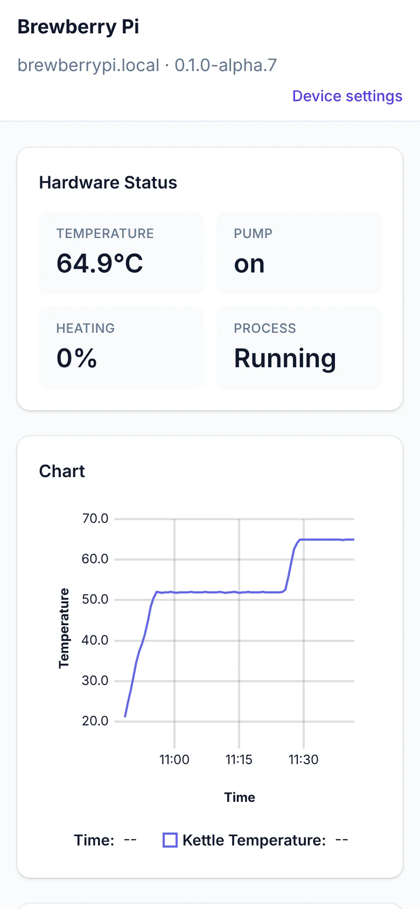
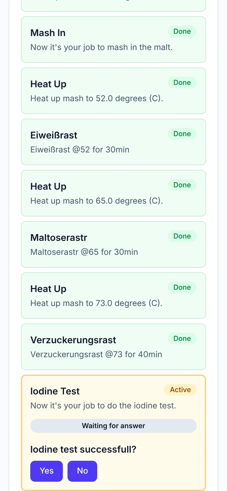

BrewberryPi / Software
The software
The brewing app and the operating system it runs on, as one image for the Raspberry Pi. You flash it, start the Pi and open the app in your browser.



Real screenshots of the app running a recipe in simulation mode.
Mash controlling
Everything a brew day needs.
Nothing it doesn't.
Recipe definition
A recipe is a list of steps.
BrewberryPi works through it.
Heat up, rest, mash in, iodine test, lautering, boil. A recipe is a small JSON file, and each step switches the heater and pump on its own or waits for you.
Operating system
One image.
Everything on it.
BrewberryPi OS is a ready-made Raspberry Pi image built for one job. It starts the app at boot, keeps it up to date and keeps it safe.
Flash and brew
Write the image with Raspberry Pi Imager. The app starts on its own at every boot.
Flashing guideWi-Fi hotspot
No home network found? The Pi opens its own hotspot, and your phone lands on the Wi-Fi setup page.
Wi-Fi setupLive on every screen
Temperature, heater power and pump at a glance, pushed to every browser in your network the moment they change. Any of them can control the brew.
Updates from the browser
New versions install from the device page. They are signature-checked, and the previous one stays for rollback.
App versions and updatesSettings in the browser
Device settings on their own page, and the config folder as a network share you open from your computer.
ConfigurationSurvives power cuts
The system is read-only; settings and app versions live on their own data partition.
How the OS worksSource code and documentation
App and operating system on GitHub, with the user manual, the app specification and the developer guide.